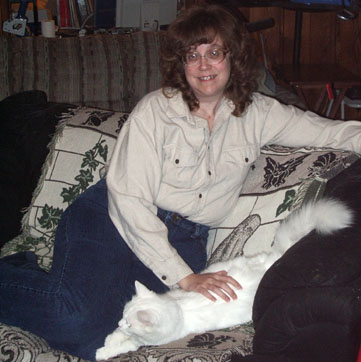
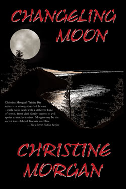
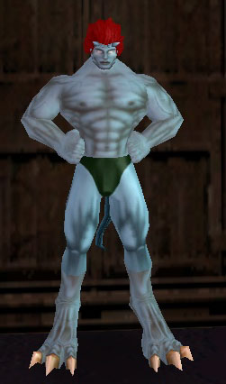
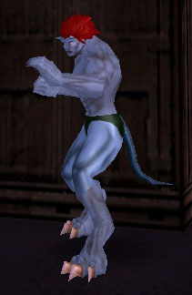
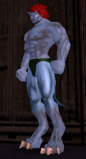

Sabledrake Forum
The Christine Morgan information site
We have lots of projects, cons and events coming up, plus various other news and updates:
-- I am looking forward to once again being a guest at RadCon, over President's Day weekend (Feb 17-19) in Pasco, WA.
-- The 10th Annual Gathering of Gargoyles will be held in Southern California this summer. We'll be there; will you?
-- For the Gathering, Tim and I will be editing the 3rd in a series of fanfic anthologies to be sold at the con. The previous ones were about the Phoenix Gate and the Eye of Odin; this time, completing the set, the theme is the Grimorum Arcanorum. Submissions for stories and interior art are now open! Find the guidelines here!
-- I expect to finish and post the second part of Only the Good within a few weeks.
-- Because the ElfLore books are out of print and the rights have reverted to me, Sabledrake Enterprises will be publishing a three-in-one volume of the Complete Elflore Trilogy this year. Stay tuned!
-- I also hope to have the 6th Silver Doorway book, The Alchemist's Girl, out this year!
-- Leather, Lace and Lust, an erotic anthology in which appears my short story "I Am ...", has been re-released and is now available through Amazon.com!
-- In the Original Fiction section, I've posted a short superhero story, "The Last Vigil." Feedback welcome!
-- The third Trinity Bay book, Changeling Moon, is getting some good reviews!
-- I am currently at work on
a new horror novel, Birthright, and have three other books (His
Blood, Tell no Tales, and Scoot) out awaiting response from
various publishers.
Added a couple of links to the (probably hopelessly outdated by now) Gargoyles Links page.
Here is a video clip of Becca doing a Fear Factor Halloween stunt.
And here's me, having lost 85 pounds and gotten a new
'do:

(and Ichabod, our sweet but dumb white cat)
Happy Thanksgiving, all those who celebrate it!
Nothing much new to add at the moment. I am participating in National Novel Writing Month for the second year in a row. Goal: to write a complete, at least 50,000 word, manuscript in one month. Last year, I did it with Scoot, though since it's a genre-defying quirkfest, I still haven't decided exactly what to do with the darn thing. This year's project is a horror novel called Birthright, one I'd tried to write before and trashed to start over from scratch. As of today, I'm at just over 35,000 words. Not too shabby.
And when I'm not working on that, I've mostly just been spending my time playing City of Heroes and/or City of Villains. Here's some recent screenshot fun!
Wow, it's been way too long since I've updated here, and a lot has happened!
To begin, I've passed my one-year anniversary since the weight-loss surgery, and have lost over 80 pounds!
Also, the 3rd Trinity Bay book, Changeling
Moon, is now in print and available for your horror reading pleasure!
Order your signed copies direct from the author, ask for them at your favorite
bookstore, or get them online at Shocklines.
Here's a look:
|
 |
For thousands of years, they have lived among us. Their abilities have
given rise to our oldest legends and our deepest fears. They are changelings.
Shape-shifters. Hunters. Creatures of the night. Ruled by the moon, and
by their own savage hungers. Some wish only to survive unnoticed in our
world, to be left alone and have as little to do with us as possible. They
keep to their laws and traditions. They keep to themselves. Their first
and only loyalty is to the pack.
But there are those who are outcasts from their own kind. Outcasts, like the beautiful and ruthless Simone Drachen and her perversely devoted son. They have broken the ancient laws, tasted of the forbidden, and gained greater power from it. To them, humans are not something to be avoided and tolerated. To them, we are prey. And now they have come to Trinity Bay, where one troubled young woman will be caught in the midst of their deadly conflict. Aiden Ferguson has lost everyone she ever cared about. Orphaned, alone, reclusive and shy, she leads a quiet existence in her little house on the beach, until a chance meeting with a handsome stranger begins to draw her out of her shell. An unexpected friendship with a flamboyant actress draws her out even more. For the first time in years, Aiden is learning to love life again just as her life, her soul and her very humanity are threatened by the cold white light of the . . . Changeling Moon |
And, at long last, what some of you have been waiting for ... a new fanfic! In the Guardians series, here is the explosive "Only the Good, Part One." Please do be advised that Part Two will likely not be available until after the first of the year, so if you don't want to spend the next couple of months wondering what happens next, you might want to consider waiting until both are posted. For reasons of violence, adult language and sexual content, this is for mature eyes only.
Tim and I are on staff for the Gathering of Gargoyles 2006, to be held next June in sunny Southern California! I'll be editing the third Gathering Anthology, details pending but I'll leak the theme now just in case anybody didn't simply guess the obvious -- the Grimorum Arcanorum. Naturally! So get those ideas brewing, folks ... I will be wanting your stories and illustrations!
And because you just can't keep a bad garg down no matter how you try ...
|
 |
 |
 |
Gee, when you put all these updates together like this, it sure looks like I have a one-track mind! There's something of a common theme here, methinks! ;)
In other news, I am once again participating in National Novel Writing Month. Beginning on November 1st, I will be working on a horror novel called Birthright. I've tried this one before, got about halfway through before deciding it wasn't working and junking the whole thing. Now I'm switching POV characters and starting the whole thing over from scratch. Wish me luck, and see you on the other side!